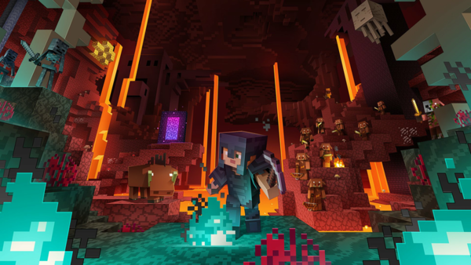
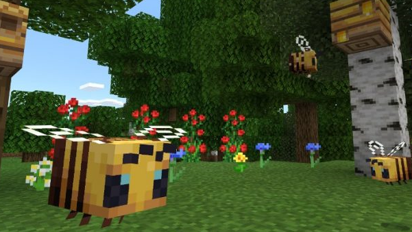
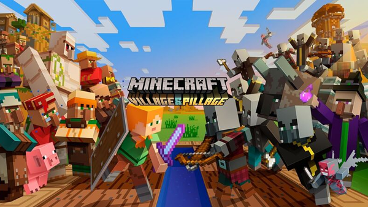

Йоу, скачай самые последние версии майнкрафта здесь!

Это крупное обновление Java Edition, вышедшее 23 июня 2020 года, которое обновило Нижний мир, добавив четыре новых биома и четыре моба, и множество новых блоков. Также в значительной степени улучшена техническая составляющая игры.

Это крупное обновление Minecraft: Java Edition, которое вышло 10 декабря 2019 года. Это обновление добавило пчёл и связанные с ними предметы, а также улучшило производительность и привнесло некоторые особенности, ранее доступные только для Bedrock Edition.

Крупное обновление Minecraft: Java Edition, которое было выпущено 23 апреля 2019 года. Основное внимание сфокусировано на обновлении деревень. Вместе с этим, в игру было добавлено множество новых блоков и мобов, модернизирована система изготовления, из-за чего некоторые рецепты крафта перенесены в различные блоки.